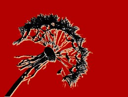

Best Book of the Series

Pale Demon is the ninth book in Kim Harrison's The Hollows series, released in 2011. This installment continues the story of Rachel Morgan, a witch and bounty hunter, as she navigates the complex and dangerous supernatural world. The novel picks up with Rachel facing new threats, both from external enemies and from within her own heart. In Pale Demon, Harrison skillfully blends action, suspense, and humor, taking readers on a wild ride as Rachel confronts the forces that want to control or destroy her.
Rachels Growth
One of the major themes in Pale Demon is Rachel's growth as a witch and as a person. Throughout the series, she has struggled with her identity and place in the world, but in this book, she begins to accept her role as a powerful and capable witch. This self-discovery plays a significant part in the novel, as Rachel learns to trust herself and her abilities, even when faced with seemingly insurmountable odds. It is a turning point for her character, as she comes into her own and becomes more determined to control her destiny.
Character bonds
The book also delves deeper into the relationships between the characters, especially Rachel’s complicated bond with the demon, Al. Their uneasy alliance is central to the story, as Rachel must rely on Al in ways she never has before. Despite their tumultuous history, Al proves to be both a powerful ally and a source of unexpected support, adding an interesting dynamic to the novel. This relationship, along with Rachel’s evolving feelings for her vampire partner, Ivy, adds layers of emotional depth to the plot.